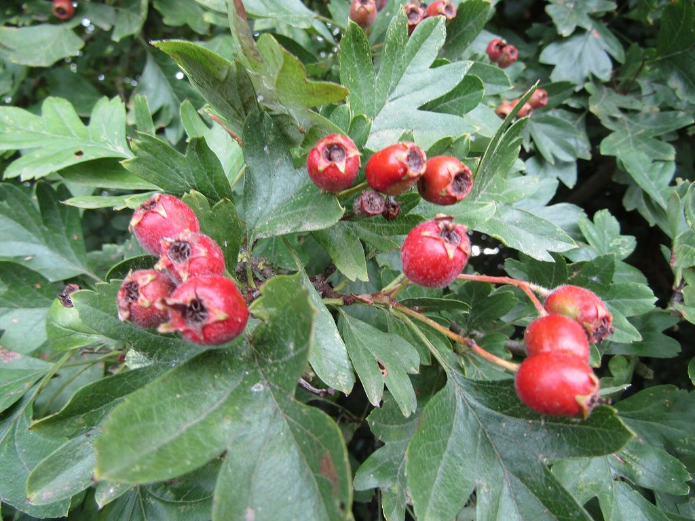

Cikk · Galagonya
Galagonya és szív: teának jó, a szívgyógyszert ne cseréld le rá
Ősszel tele vannak a bokrok piros galagonyával, és biztos hallottad már, hogy a galagonyatea jót tesz a szívnek. A nagymamám is ezt mondta. Most utánanéztem, mit tud erről a kutatás. A rövid válasz: a tea egy finom szokás lehet, de ha szívbeteg vagy, ne kezdj el magadtól galagonyát szedni, mert van egy vizsgálat, ami óvatosságra int.

Honnan jön, és mire árulják?
A galagonya a rózsafélék családjába tartozó virágos cserje vagy kis fa, a mérsékelt égövön szinte mindenhol megtalálod. Régen szívbetegségre, emésztésre, vérkeringésre, vese- és hólyagpanaszokra használták, a bőrre pedig sebekre, viszketésre, fagyásra kenték.
Ma főleg a szívre és az erekre ajánlják, de árulják fogyásra és szorongásra is. Átolvastam az amerikai NIH komplementer és integratív egészségügyi központjának (NCCIH) galagonyáról szóló lapját, amelyet 2025 áprilisában frissítettek.
Mit mond a NIH?
Amit a lap ír A legtöbb betegségre alig vagy egyáltalán nincs jó minőségű adat a galagonyáról. Szívelégtelenségben, vagyis amikor a szív nem tud elég vért pumpálni, vizsgálták, de az eredmények ellentmondanak egymásnak.
Amire kevés az adat Nem tudni, hat-e a galagonya a koszorúér-betegségre, a mellkasi szorító fájdalomra, a szívritmuszavarra vagy az érelmeszesedésre. Arra semmi nem utal, hogy segítene fogyni, és a szorongásra gyakorolt hatása is bizonytalan.
Amire figyelj
Egy vizsgálatban a galagonya egyik kivonatát szedő szívelégtelen betegeknél korán megnőtt a betegség romlásának kockázata. Nem tudni pontosan, miért, de a NIH szerint lehet, hogy a galagonya kölcsönhatásba lépett a betegek gyógyszereivel. Ezért ha szívgyógyszert szedsz, előbb beszélj az orvosoddal vagy a gyógyszerészeddel.
Van egy komolyabb figyelmeztetés is. Az amerikai gyógyszerhatóság (FDA) 2024 januárjában közölte, hogy több, „tejocote root” (mexikói galagonyagyökér) néven árult, főleg fogyasztásra kínált étrend-kiegészítőben valójában sárga leander volt, ami mérgező növény, és súlyos, akár halálos ártalmat is okozhat. Ha netről rendelnél ilyet, inkább hagyd.
Rövid ideig egyes galagonyás készítmények valószínűleg biztonságosak, de 16 hétnél hosszabb szedést még senki nem vizsgált. Szédülhetsz, hányingered lehet, hányhatsz, hasmenést vagy izomfájdalmat kaphatsz tőle. Terhesség és szoptatás alatt keveset tudunk róla.
Szerintem egy csésze galagonyatea egy őszi estén belefér. A szívedet viszont ne erre bízd, hanem az orvosodra.
Források
- National Center for Complementary and Integrative Health, NIH. Hawthorn. Frissítve: 2025. április. https://www.nccih.nih.gov/health/hawthorn
- Zick SM, Gillespie B, Aaronson KD. The effect of Crataegus oxycantha special extract WS 1422 on clinical progression in patients with mild to moderate symptoms of heart failure. Eur J Heart Fail. 2008;10(6):587-593. PubMed 18490196
- Pittler MH, Guo R, Ernst E. Hawthorn extract for treating chronic heart failure. Cochrane Database Syst Rev. 2008;(1):CD005312. https://doi.org/10.1002/14651858.CD005312.pub2 · PubMed 18254076